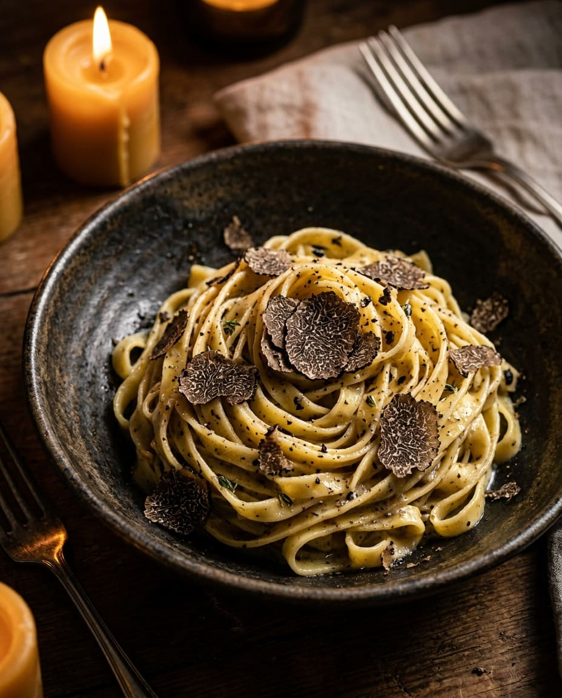
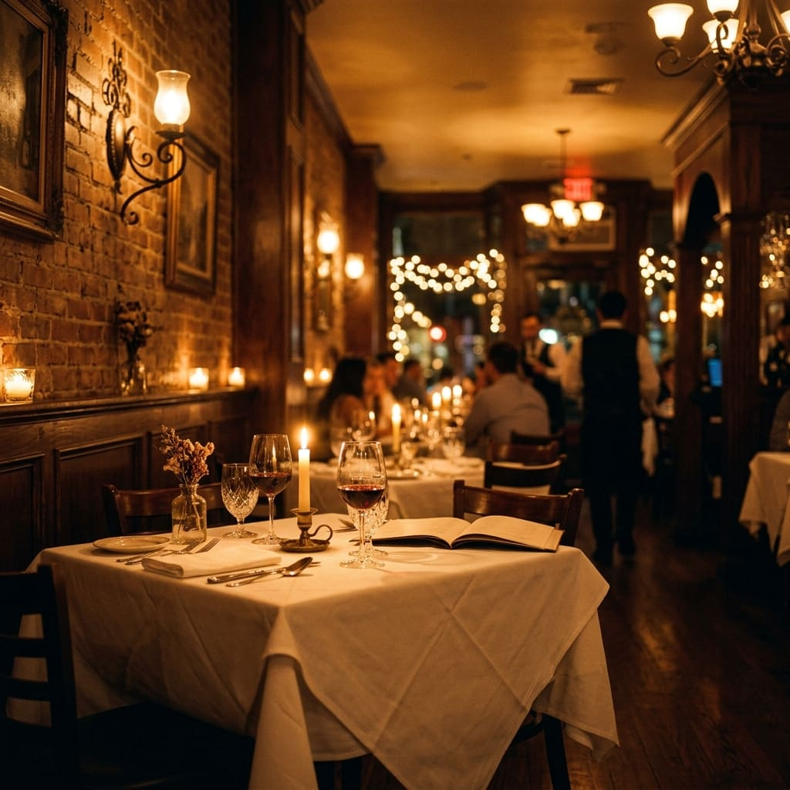
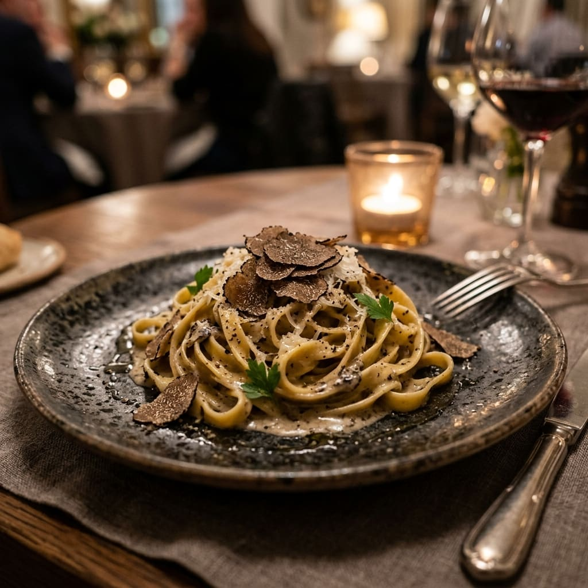
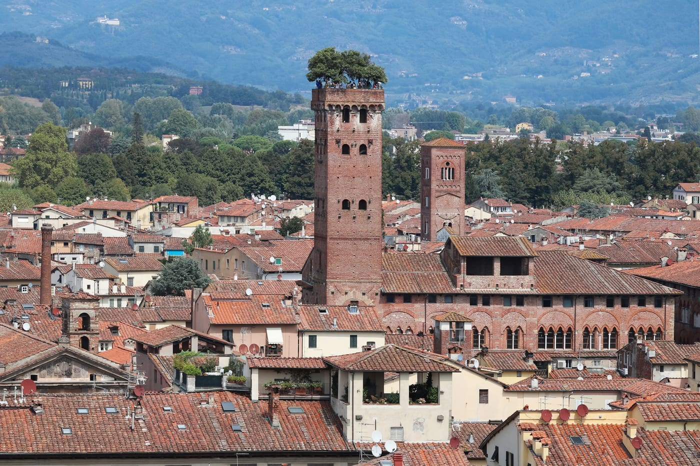
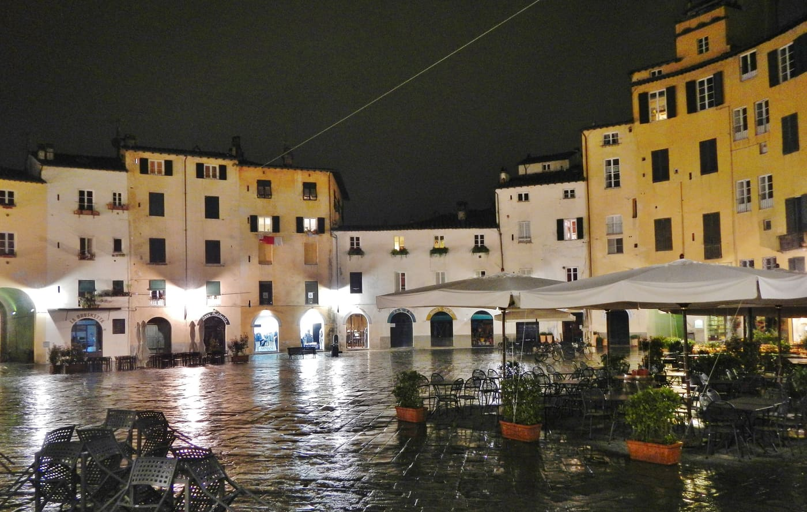
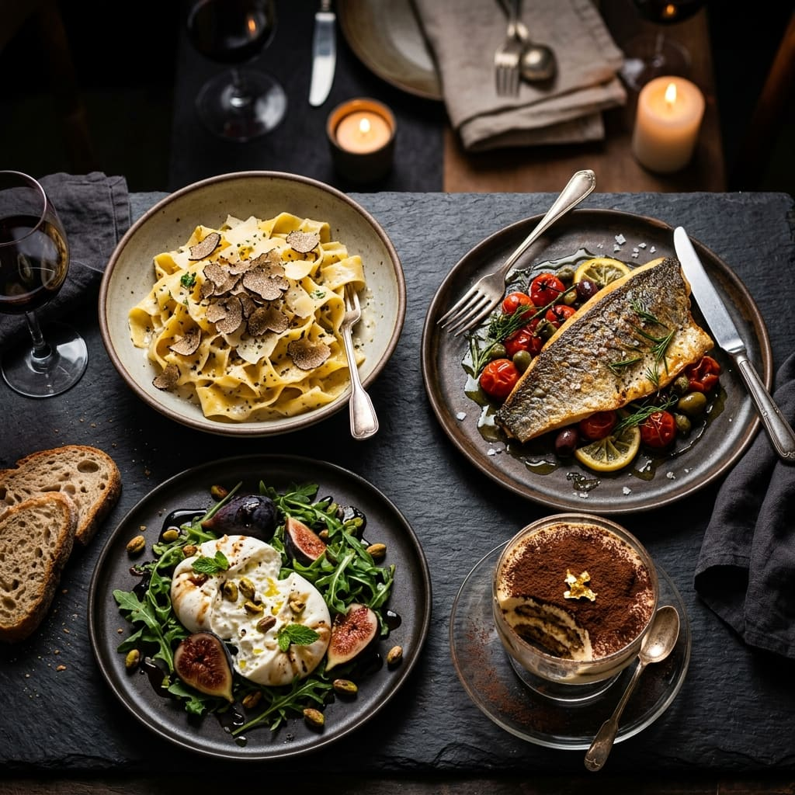
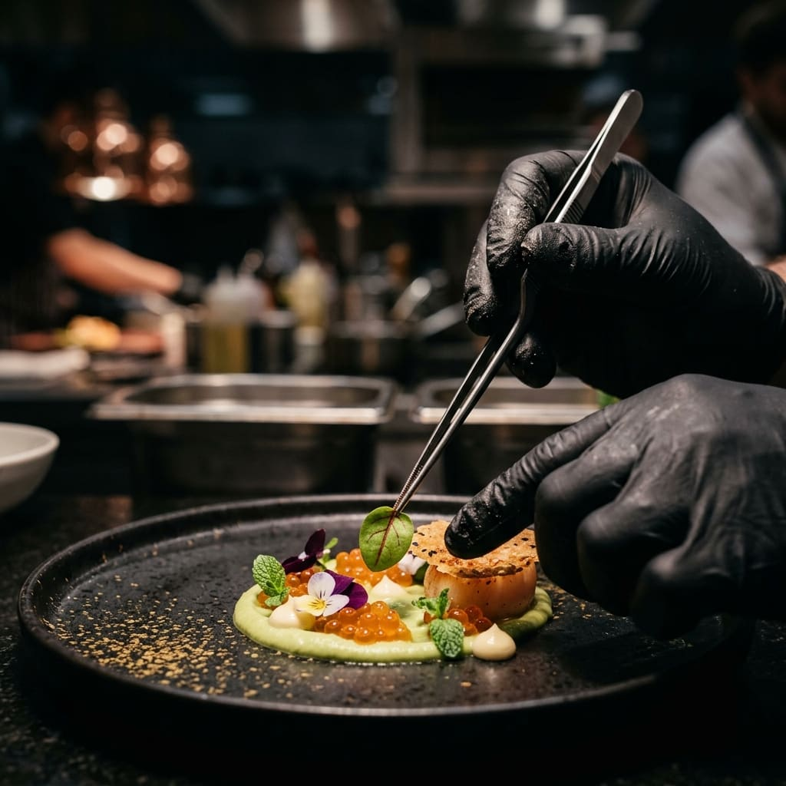
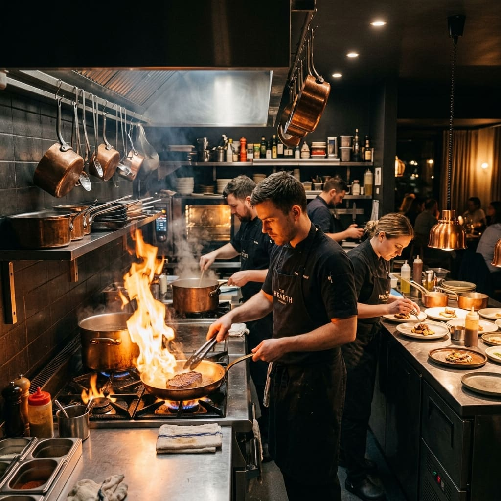
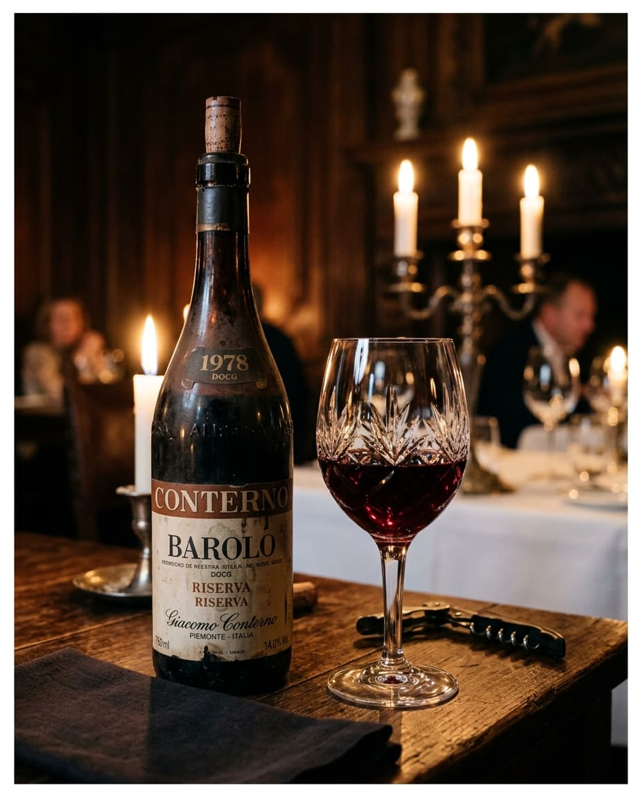
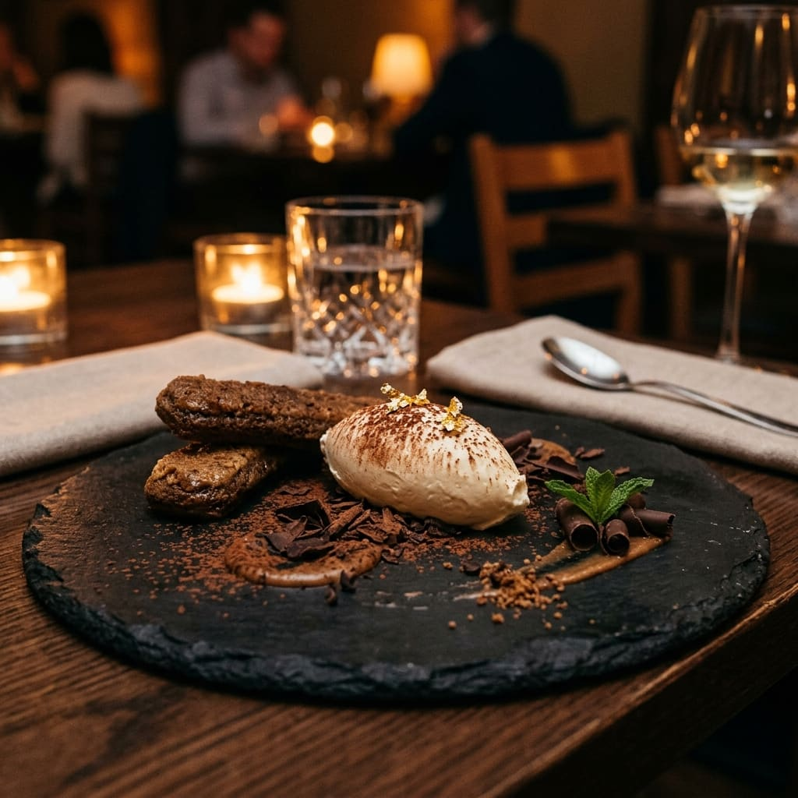

Two o'clock
The pasta is rolled by hand. Tortelli first, this city's own shape.

A trattoria inside the walls of Lucca. Tortelli rolled this morning, buccellato from the oven, and wine from the hills you can see from the tower.
Find a tableSix nights a week we cook the food of this city: tortelli, farro, buccellato, and the wine of the hills you can see from the tower.


Rolled by hand at two o'clock, filled with ricotta and herbs, finished with butter the colour of the hills at sunset.
Before you eat, walk. The whole of Lucca is inside four kilometres of wall, and we are at the middle of it.


The pasta is rolled by hand. Tortelli first, this city's own shape.

The first tables. The candles are lit one at a time, never all at once.

The pass fills. Every plate is looked at before it leaves the kitchen.

The room at its loudest and happiest. Two pans on the fire at once.

Something red from the hills, by the glass or the bottle. Ask and we will pour you the right one.

Tiramisu and espresso, and nobody in any hurry to leave.

Via Fillungo 42
55100 Lucca, Tuscany